Next: Hydrodynamic Interaction Parameters
Up: stokes3: Stokesian Dynamics Simulator
Previous: Output Parameters
- np : (int) number of all particles (both mobile and fixed)
- nm : (int) number of mobile particles
- x : (list or vector of doubles)
initial positions of all particles
- a : (list or vector of doubles)
radius of particles (list or vector with length np)
by default (if not given), monodisperse system
- slip : (list or vector of doubles)
slip length of particles (list or vector with length np)
by default (if not given), no-slip particles
- Ui : (list or vector of doubles)
imposed translational velocity
- Oi : (list or vector of doubles)
imposed angular velocity
- Ei : (list or vector of doubles)
imposed strain velocity
- shear-mode : (int)
0 imposed flow is given by Ui, Oi, Ei (default)
1 for simple shear (x = flow dir, y = grad dir)
2 for simple shear (x = flow dir, z = grad dir)
NOTE: (Ui,Oi,Ei) is overwritten
for the case
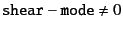
- shear-rate : (double) shear rate
for the case
- shear-shift : the initial cell-shift for
- F0 : (list or vector of doubles)
applied force

- T0 : (list or vector of doubles)
applied force
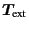
- stokes : (doubles) effective Stokes number

Currently, the applied force
and torque
are given by the single vector, respectively.
(That is, all particles have the same force and torque.)
** This should be extended soon. **
The imposed flow
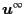 is given by three parameters
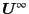,
 , and
, and
 as
as
Therefore, this is a linear flow and the gradient tensor
is given by
The vector (or list) Oi has three elements
and the vector (or list) Ei has five elements
 |
(2.4) |
Note the order of the element.
From these five elements, all nine elements of
is recovered,
using the properties
For example, the simple shear flow in 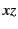-plane
(velocity direction in  and vorticity direction in
and vorticity direction in  ) is given by
) is given by
and zero for others. See the gradient
This is given by parameters Oi and Ei as
| 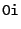 |
 |
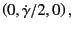 |
(2.8) |
| 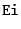 |
|
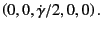 |
(2.9) |
The planar extension in -plane with the gradient
is given by
and zero for others. Note that
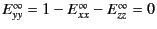.
Therefore, it is given by
|
|
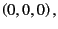 |
(2.12) |
|
|
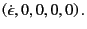 |
(2.13) |
Next: Hydrodynamic Interaction Parameters
Up: stokes3: Stokesian Dynamics Simulator
Previous: Output Parameters
Kengo Ichiki 2008-10-12